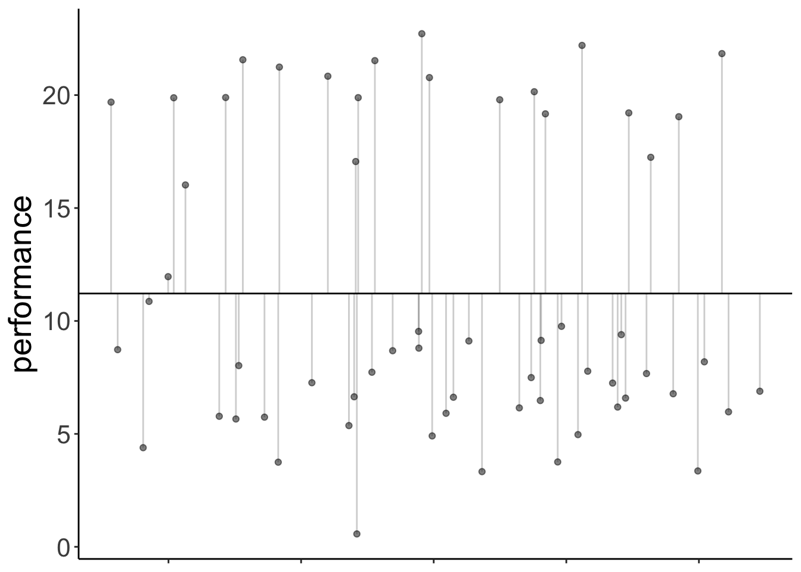
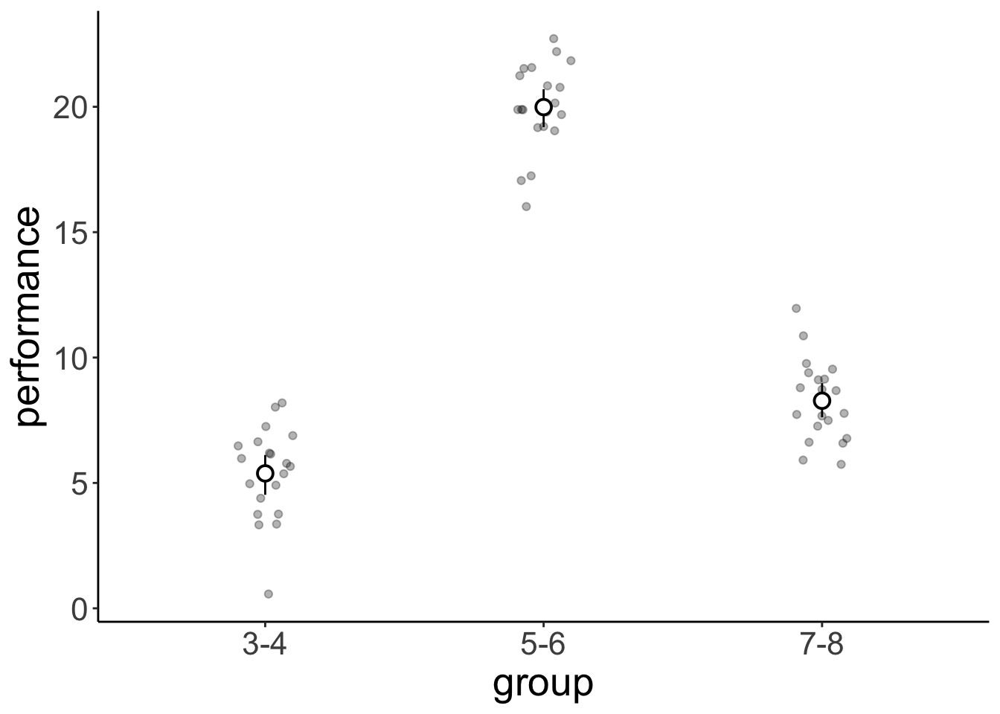

Chapter 13 Linear model 4
13.1 Load packages and set plotting theme
library("knitr") # for knitting RMarkdown
library("kableExtra") # for making nice tables
library("janitor") # for cleaning column names
library("broom") # for tidying up linear models
library("afex") # for running ANOVAs
library("emmeans") # for calculating contrasts
library("car") # for calculating ANOVAs
library("tidyverse") # for wrangling, plotting, etc.theme_set(
theme_classic() + #set the theme
theme(text = element_text(size = 20)) #set the default text size
)
# these options here change the formatting of how comments are rendered
opts_chunk$set(comment = "",
fig.show = "hold")13.2 Load data sets
Read in the data:
df.poker = read_csv("data/poker.csv") %>%
mutate(skill = factor(skill,
levels = 1:2,
labels = c("expert", "average")),
skill = fct_relevel(skill, "average", "expert"),
hand = factor(hand,
levels = 1:3,
labels = c("bad", "neutral", "good")),
limit = factor(limit,
levels = 1:2,
labels = c("fixed", "none")),
participant = 1:n()) %>%
select(participant, everything())
# creating an unbalanced data set by removing the first 10 participants
df.poker.unbalanced = df.poker %>%
filter(!participant %in% 1:10)13.3 ANOVA with unbalanced design
For the standard anova() function, the order of the independent predictors matters when the design is unbalanced.
There are two reasons for why this happens.
- In an unbalanced design, the predictors in the model aren’t uncorrelated anymore.
- The standard
anova()function computes Type I (sequential) sums of squares.
Sequential sums of squares means that the predictors are added to the model in the order in which the are specified.
# one order
lm(formula = balance ~ skill + hand,
data = df.poker.unbalanced) %>%
anova()Analysis of Variance Table
Response: balance
Df Sum Sq Mean Sq F value Pr(>F)
skill 1 74.3 74.28 4.2904 0.03922 *
hand 2 2385.1 1192.57 68.8827 < 2e-16 ***
Residuals 286 4951.5 17.31
---
Signif. codes: 0 '***' 0.001 '**' 0.01 '*' 0.05 '.' 0.1 ' ' 1# another order
lm(formula = balance ~ hand + skill,
data = df.poker.unbalanced) %>%
anova()Analysis of Variance Table
Response: balance
Df Sum Sq Mean Sq F value Pr(>F)
hand 2 2419.8 1209.92 69.8845 <2e-16 ***
skill 1 39.6 39.59 2.2867 0.1316
Residuals 286 4951.5 17.31
---
Signif. codes: 0 '***' 0.001 '**' 0.01 '*' 0.05 '.' 0.1 ' ' 1We should compute an ANOVA with type 3 sums of squares, and set the contrast to sum contrasts. I like to use the joint_tests() function from the “emmeans” package for doing so. It does both of these things for us.
# one order
lm(formula = balance ~ hand * skill,
data = df.poker.unbalanced) %>%
joint_tests() model term df1 df2 F.ratio p.value
hand 2 284 68.973 <.0001
skill 1 284 2.954 0.0868
hand:skill 2 284 7.440 0.0007# another order
lm(formula = balance ~ skill + hand,
data = df.poker.unbalanced) %>%
joint_tests() model term df1 df2 F.ratio p.value
skill 1 286 2.287 0.1316
hand 2 286 68.883 <.0001Now, the order of the independent variables doesn’t matter anymore.
Alternatively,we can also use the aov_ez() function from the afex package.
lm(formula = balance ~ skill * hand,
data = df.poker.unbalanced) %>%
joint_tests() model term df1 df2 F.ratio p.value
skill 1 284 2.954 0.0868
hand 2 284 68.973 <.0001
skill:hand 2 284 7.440 0.0007fit = aov_ez(id = "participant",
dv = "balance",
data = df.poker.unbalanced,
between = c("hand", "skill"))Contrasts set to contr.sum for the following variables: hand, skillfit$AnovaAnova Table (Type III tests)
Response: dv
Sum Sq Df F value Pr(>F)
(Intercept) 27781.3 1 1676.9096 < 2.2e-16 ***
hand 2285.3 2 68.9729 < 2.2e-16 ***
skill 48.9 1 2.9540 0.0867525 .
hand:skill 246.5 2 7.4401 0.0007089 ***
Residuals 4705.0 284
---
Signif. codes: 0 '***' 0.001 '**' 0.01 '*' 0.05 '.' 0.1 ' ' 113.4 Interpreting parameters (very important!)
fit = lm(formula = balance ~ skill * hand,
data = df.poker)
fit %>%
summary()
Call:
lm(formula = balance ~ skill * hand, data = df.poker)
Residuals:
Min 1Q Median 3Q Max
-13.6976 -2.4739 0.0348 2.4644 14.7806
Coefficients:
Estimate Std. Error t value Pr(>|t|)
(Intercept) 4.5866 0.5686 8.067 1.85e-14 ***
skillexpert 2.7098 0.8041 3.370 0.000852 ***
handneutral 5.2572 0.8041 6.538 2.75e-10 ***
handgood 9.2110 0.8041 11.455 < 2e-16 ***
skillexpert:handneutral -1.7042 1.1372 -1.499 0.135038
skillexpert:handgood -4.2522 1.1372 -3.739 0.000222 ***
---
Signif. codes: 0 '***' 0.001 '**' 0.01 '*' 0.05 '.' 0.1 ' ' 1
Residual standard error: 4.02 on 294 degrees of freedom
Multiple R-squared: 0.3731, Adjusted R-squared: 0.3624
F-statistic: 34.99 on 5 and 294 DF, p-value: < 2.2e-16Important: The t-statistic for
skillexpertis not telling us that there is a main effect of skill. Instead, it shows the difference betweenskill = averageandskill = expertwhen all other predictors in the model are 0!!
Here, this parameter just captures whether there is a significant difference between average and skilled players when they have a bad hand (because that’s the reference category here). Let’s check that this is true.
df.poker %>%
group_by(skill, hand) %>%
summarize(mean = mean(balance)) %>%
filter(hand == "bad") %>%
pivot_wider(names_from = skill,
values_from = mean) %>%
mutate(difference = expert - average)`summarise()` has grouped output by 'skill'. You can override using the
`.groups` argument.# A tibble: 1 × 4
hand average expert difference
<fct> <dbl> <dbl> <dbl>
1 bad 4.59 7.30 2.71We see here that the difference in balance between the average and expert players when they have a bad hand is 2.7098. This is the same value as the skillexpert parameter in the summary() table above, and the corresponding significance test captures whether this difference is significantly different from 0. It doesn’t capture, whether there is an effect of skill overall! To test this, we need to do an analysis of variance (using the Anova(type = 3) function).
13.5 Linear contrasts
Here is a linear contrast that assumes that there is a linear relationship between the quality of one’s hand, and the final balance.
df.poker = df.poker %>%
mutate(hand_contrast = factor(hand,
levels = c("bad", "neutral", "good"),
labels = c(-1, 0, 1)),
hand_contrast = hand_contrast %>%
as.character() %>%
as.numeric())
fit.contrast = lm(formula = balance ~ hand_contrast,
data = df.poker)Here is a visualization of the model prediction together with the residuals.
df.plot = df.poker %>%
mutate(hand_jitter = hand %>% as.numeric(),
hand_jitter = hand_jitter + runif(n(), min = -0.4, max = 0.4))
df.tidy = fit.contrast %>%
tidy() %>%
select_if(is.numeric) %>%
mutate_all(~ round(., 2))
df.augment = fit.contrast %>%
augment() %>%
clean_names() %>%
bind_cols(df.plot %>% select(hand_jitter))
ggplot(data = df.plot,
mapping = aes(x = hand_jitter,
y = balance,
color = as.factor(hand_contrast))) +
geom_point(alpha = 0.8) +
geom_segment(data = NULL,
aes(x = 0.6,
xend = 1.4,
y = df.tidy$estimate[1]-df.tidy$estimate[2],
yend = df.tidy$estimate[1]-df.tidy$estimate[2]),
color = "red",
size = 1) +
geom_segment(data = NULL,
aes(x = 1.6,
xend = 2.4,
y = df.tidy$estimate[1],
yend = df.tidy$estimate[1]),
color = "orange",
size = 1) +
geom_segment(data = NULL,
aes(x = 2.6,
xend = 3.4,
y = df.tidy$estimate[1] + df.tidy$estimate[2],
yend = df.tidy$estimate[1] + df.tidy$estimate[2]),
color = "green",
size = 1) +
geom_segment(data = df.augment,
aes(xend = hand_jitter,
y = balance,
yend = fitted),
alpha = 0.3) +
labs(y = "balance") +
scale_color_manual(values = c("red", "orange", "green")) +
scale_x_continuous(breaks = 1:3, labels = c("bad", "neutral", "good")) +
theme(legend.position = "none",
axis.title.x = element_blank())
13.5.1 Hypothetical data
Here is some code to generate a hypothetical developmental data set.
# make example reproducible
set.seed(1)
# means = c(5, 10, 5)
means = c(3, 5, 20)
# means = c(3, 5, 7)
# means = c(3, 7, 12)
sd = 2
sample_size = 20
# generate data
df.development = tibble(
group = rep(c("3-4", "5-6", "7-8"), each = sample_size),
performance = NA) %>%
mutate(performance = ifelse(group == "3-4",
rnorm(sample_size,
mean = means[1],
sd = sd),
performance),
performance = ifelse(group == "5-6",
rnorm(sample_size,
mean = means[2],
sd = sd),
performance),
performance = ifelse(group == "7-8",
rnorm(sample_size,
mean = means[3],
sd = sd),
performance),
group = factor(group, levels = c("3-4", "5-6", "7-8")),
group_contrast = group %>%
fct_recode(`-1` = "3-4",
`0` = "5-6",
`1` = "7-8") %>%
as.character() %>%
as.numeric())Let’s define a linear contrast using the emmeans package, and test whether it’s significant.
fit = lm(formula = performance ~ group,
data = df.development)
fit %>%
emmeans("group",
contr = list(linear = c(-0.5, 0, 0.5)),
adjust = "bonferroni") %>%
pluck("contrasts") contrast estimate SE df t.ratio p.value
linear 8.45 0.274 57 30.856 <.0001Yes, we see that there is a significant positive linear contrast with an estimate of 8.45. This means, it predicts a difference of 8.45 in performance between each of the consecutive age groups. For a visualization of the predictions of this model, see Figure @ref{fig:linear-contrast-model}.
13.5.2 Visualization
Total variance:
set.seed(1)
fit_c = lm(formula = performance ~ 1,
data = df.development)
df.plot = df.development %>%
mutate(group_jitter = 1 + runif(n(),
min = -0.25,
max = 0.25))
df.augment = fit_c %>%
augment() %>%
clean_names() %>%
bind_cols(df.plot %>% select(group, group_jitter))
ggplot(data = df.plot,
mapping = aes(x = group_jitter,
y = performance,
fill = group)) +
geom_hline(yintercept = mean(df.development$performance)) +
geom_point(alpha = 0.5) +
geom_segment(data = df.augment,
aes(xend = group_jitter,
yend = fitted),
alpha = 0.2) +
labs(y = "performance") +
theme(legend.position = "none",
axis.text.x = element_blank(),
axis.title.x = element_blank())
With contrast
# make example reproducible
set.seed(1)
fit = lm(formula = performance ~ group_contrast,
data = df.development)
df.plot = df.development %>%
mutate(group_jitter = group %>% as.numeric(),
group_jitter = group_jitter + runif(n(), min = -0.4, max = 0.4))
df.tidy = fit %>%
tidy() %>%
select(where(is.numeric)) %>%
mutate(across(.fns = ~ round(. , 2)))
df.augment = fit %>%
augment() %>%
clean_names() %>%
bind_cols(df.plot %>% select(group_jitter))
ggplot(data = df.plot,
mapping = aes(x = group_jitter,
y = performance,
color = as.factor(group_contrast))) +
geom_point(alpha = 0.8) +
geom_segment(data = NULL,
aes(x = 0.6,
xend = 1.4,
y = df.tidy$estimate[1]-df.tidy$estimate[2],
yend = df.tidy$estimate[1]-df.tidy$estimate[2]),
color = "red",
size = 1) +
geom_segment(data = NULL,
aes(x = 1.6,
xend = 2.4,
y = df.tidy$estimate[1],
yend = df.tidy$estimate[1]),
color = "orange",
size = 1) +
geom_segment(data = NULL,
aes(x = 2.6,
xend = 3.4,
y = df.tidy$estimate[1] + df.tidy$estimate[2],
yend = df.tidy$estimate[1] + df.tidy$estimate[2]),
color = "green",
size = 1) +
geom_segment(data = df.augment,
aes(xend = group_jitter,
y = performance,
yend = fitted),
alpha = 0.3) +
labs(y = "performance") +
scale_color_manual(values = c("red", "orange", "green")) +
scale_x_continuous(breaks = 1:3, labels = levels(df.development$group)) +
theme(legend.position = "none",
axis.title.x = element_blank())Figure 13.1: Predictions of the linear contrast model
Results figure
df.development %>%
ggplot(mapping = aes(x = group,
y = performance)) +
geom_point(alpha = 0.3,
position = position_jitter(width = 0.1,
height = 0)) +
stat_summary(fun.data = "mean_cl_boot",
shape = 21,
fill = "white",
size = 0.75)
Here we test some more specific hypotheses: the the two youngest groups of children are different from the oldest group, and that the 3 year olds are different from the 5 year olds.
# fit the linear model
fit = lm(formula = performance ~ group,
data = df.development)
# check factor levels
levels(df.development$group)[1] "3-4" "5-6" "7-8"# define the contrasts of interest
contrasts = list(young_vs_old = c(-0.5, -0.5, 1),
three_vs_five = c(-0.5, 0.5, 0))
# compute significance test on contrasts
fit %>%
emmeans("group",
contr = contrasts,
adjust = "bonferroni") %>%
pluck("contrasts") contrast estimate SE df t.ratio p.value
young_vs_old 16.094 0.474 57 33.936 <.0001
three_vs_five 0.803 0.274 57 2.933 0.0097
P value adjustment: bonferroni method for 2 tests 13.5.3 Post-hoc tests
Post-hoc tests for a single predictor (using the poker data set).
fit = lm(formula = balance ~ hand,
data = df.poker)
# post hoc tests
fit %>%
emmeans(pairwise ~ hand,
adjust = "bonferroni") %>%
pluck("contrasts") contrast estimate SE df t.ratio p.value
bad - neutral -4.41 0.581 297 -7.576 <.0001
bad - good -7.08 0.581 297 -12.185 <.0001
neutral - good -2.68 0.581 297 -4.609 <.0001
P value adjustment: bonferroni method for 3 tests Post-hoc tests for two predictors (:
# fit the model
fit = lm(formula = balance ~ hand + skill,
data = df.poker)
# post hoc tests
fit %>%
emmeans(pairwise ~ hand + skill,
adjust = "bonferroni") %>%
pluck("contrasts") contrast estimate SE df t.ratio p.value
bad average - neutral average -4.405 0.580 296 -7.593 <.0001
bad average - good average -7.085 0.580 296 -12.212 <.0001
bad average - bad expert -0.724 0.474 296 -1.529 1.0000
bad average - neutral expert -5.129 0.749 296 -6.849 <.0001
bad average - good expert -7.809 0.749 296 -10.427 <.0001
neutral average - good average -2.680 0.580 296 -4.619 0.0001
neutral average - bad expert 3.681 0.749 296 4.914 <.0001
neutral average - neutral expert -0.724 0.474 296 -1.529 1.0000
neutral average - good expert -3.404 0.749 296 -4.545 0.0001
good average - bad expert 6.361 0.749 296 8.492 <.0001
good average - neutral expert 1.955 0.749 296 2.611 0.1424
good average - good expert -0.724 0.474 296 -1.529 1.0000
bad expert - neutral expert -4.405 0.580 296 -7.593 <.0001
bad expert - good expert -7.085 0.580 296 -12.212 <.0001
neutral expert - good expert -2.680 0.580 296 -4.619 0.0001
P value adjustment: bonferroni method for 15 tests fit = lm(formula = balance ~ hand,
data = df.poker)
# comparing each to the mean
fit %>%
emmeans(eff ~ hand) %>%
pluck("contrasts") contrast estimate SE df t.ratio p.value
bad effect -3.830 0.336 297 -11.409 <.0001
neutral effect 0.575 0.336 297 1.713 0.0877
good effect 3.255 0.336 297 9.696 <.0001
P value adjustment: fdr method for 3 tests # one vs. all others
fit %>%
emmeans(del.eff ~ hand) %>%
pluck("contrasts") contrast estimate SE df t.ratio p.value
bad effect -5.745 0.504 297 -11.409 <.0001
neutral effect 0.863 0.504 297 1.713 0.0877
good effect 4.882 0.504 297 9.696 <.0001
P value adjustment: fdr method for 3 tests 13.5.4 Understanding dummy coding
fit = lm(formula = balance ~ 1 + hand,
data = df.poker)
fit %>%
summary()
Call:
lm(formula = balance ~ 1 + hand, data = df.poker)
Residuals:
Min 1Q Median 3Q Max
-12.9264 -2.5902 -0.0115 2.6573 15.2834
Coefficients:
Estimate Std. Error t value Pr(>|t|)
(Intercept) 5.9415 0.4111 14.451 < 2e-16 ***
handneutral 4.4051 0.5815 7.576 4.55e-13 ***
handgood 7.0849 0.5815 12.185 < 2e-16 ***
---
Signif. codes: 0 '***' 0.001 '**' 0.01 '*' 0.05 '.' 0.1 ' ' 1
Residual standard error: 4.111 on 297 degrees of freedom
Multiple R-squared: 0.3377, Adjusted R-squared: 0.3332
F-statistic: 75.7 on 2 and 297 DF, p-value: < 2.2e-16model.matrix(fit) %>%
as_tibble() %>%
distinct()# A tibble: 3 × 3
`(Intercept)` handneutral handgood
<dbl> <dbl> <dbl>
1 1 0 0
2 1 1 0
3 1 0 1df.poker %>%
select(participant, hand, balance) %>%
group_by(hand) %>%
top_n(3, wt = -participant) %>%
kable(digits = 2) %>%
kable_styling(bootstrap_options = "striped",
full_width = F)| participant | hand | balance |
|---|---|---|
| 1 | bad | 4.00 |
| 2 | bad | 5.55 |
| 3 | bad | 9.45 |
| 51 | neutral | 11.74 |
| 52 | neutral | 10.04 |
| 53 | neutral | 9.49 |
| 101 | good | 10.86 |
| 102 | good | 8.68 |
| 103 | good | 14.36 |
13.5.5 Understanding sum coding
fit = lm(formula = balance ~ 1 + hand,
contrasts = list(hand = "contr.sum"),
data = df.poker)
fit %>%
summary()
Call:
lm(formula = balance ~ 1 + hand, data = df.poker, contrasts = list(hand = "contr.sum"))
Residuals:
Min 1Q Median 3Q Max
-12.9264 -2.5902 -0.0115 2.6573 15.2834
Coefficients:
Estimate Std. Error t value Pr(>|t|)
(Intercept) 9.7715 0.2374 41.165 <2e-16 ***
hand1 -3.8300 0.3357 -11.409 <2e-16 ***
hand2 0.5751 0.3357 1.713 0.0877 .
---
Signif. codes: 0 '***' 0.001 '**' 0.01 '*' 0.05 '.' 0.1 ' ' 1
Residual standard error: 4.111 on 297 degrees of freedom
Multiple R-squared: 0.3377, Adjusted R-squared: 0.3332
F-statistic: 75.7 on 2 and 297 DF, p-value: < 2.2e-16model.matrix(fit) %>%
as_tibble() %>%
distinct() %>%
kable(digits = 2) %>%
kable_styling(bootstrap_options = "striped",
full_width = F)| (Intercept) | hand1 | hand2 |
|---|---|---|
| 1 | 1 | 0 |
| 1 | 0 | 1 |
| 1 | -1 | -1 |
13.6 Session info
Information about this R session including which version of R was used, and what packages were loaded.
sessionInfo()R version 4.1.2 (2021-11-01)
Platform: x86_64-apple-darwin17.0 (64-bit)
Running under: macOS Big Sur 10.16
Matrix products: default
BLAS: /Library/Frameworks/R.framework/Versions/4.1/Resources/lib/libRblas.0.dylib
LAPACK: /Library/Frameworks/R.framework/Versions/4.1/Resources/lib/libRlapack.dylib
locale:
[1] en_US.UTF-8/en_US.UTF-8/en_US.UTF-8/C/en_US.UTF-8/en_US.UTF-8
attached base packages:
[1] stats graphics grDevices utils datasets methods base
other attached packages:
[1] forcats_0.5.1 stringr_1.4.0 dplyr_1.0.9 purrr_0.3.4
[5] readr_2.1.2 tidyr_1.2.0 tibble_3.1.7 ggplot2_3.3.6
[9] tidyverse_1.3.1 car_3.0-13 carData_3.0-5 emmeans_1.7.3
[13] afex_1.1-1 lme4_1.1-29 Matrix_1.4-1 broom_0.8.0
[17] janitor_2.1.0 kableExtra_1.3.4 knitr_1.39
loaded via a namespace (and not attached):
[1] TH.data_1.1-1 minqa_1.2.4 colorspace_2.0-3
[4] ellipsis_0.3.2 htmlTable_2.4.0 estimability_1.3
[7] snakecase_0.11.0 base64enc_0.1-3 fs_1.5.2
[10] rstudioapi_0.13 farver_2.1.0 bit64_4.0.5
[13] fansi_1.0.3 mvtnorm_1.1-3 lubridate_1.8.0
[16] xml2_1.3.3 codetools_0.2-18 splines_4.1.2
[19] Formula_1.2-4 jsonlite_1.8.0 nloptr_2.0.0
[22] cluster_2.1.3 dbplyr_2.1.1 png_0.1-7
[25] compiler_4.1.2 httr_1.4.3 backports_1.4.1
[28] assertthat_0.2.1 fastmap_1.1.0 cli_3.3.0
[31] htmltools_0.5.2 tools_4.1.2 lmerTest_3.1-3
[34] coda_0.19-4 gtable_0.3.0 glue_1.6.2
[37] reshape2_1.4.4 Rcpp_1.0.8.3 cellranger_1.1.0
[40] jquerylib_0.1.4 vctrs_0.4.1 svglite_2.1.0
[43] nlme_3.1-157 xfun_0.30 rvest_1.0.2
[46] lifecycle_1.0.1 MASS_7.3-57 zoo_1.8-10
[49] scales_1.2.0 vroom_1.5.7 hms_1.1.1
[52] parallel_4.1.2 sandwich_3.0-1 RColorBrewer_1.1-3
[55] yaml_2.3.5 gridExtra_2.3 sass_0.4.1
[58] rpart_4.1.16 latticeExtra_0.6-29 stringi_1.7.6
[61] highr_0.9 checkmate_2.1.0 boot_1.3-28
[64] rlang_1.0.2 pkgconfig_2.0.3 systemfonts_1.0.4
[67] evaluate_0.15 lattice_0.20-45 htmlwidgets_1.5.4
[70] labeling_0.4.2 bit_4.0.4 tidyselect_1.1.2
[73] plyr_1.8.7 magrittr_2.0.3 bookdown_0.26
[76] R6_2.5.1 generics_0.1.2 Hmisc_4.7-0
[79] multcomp_1.4-19 DBI_1.1.2 foreign_0.8-82
[82] pillar_1.7.0 haven_2.5.0 withr_2.5.0
[85] nnet_7.3-17 survival_3.3-1 abind_1.4-5
[88] modelr_0.1.8 crayon_1.5.1 utf8_1.2.2
[91] tzdb_0.3.0 rmarkdown_2.14 jpeg_0.1-9
[94] grid_4.1.2 readxl_1.4.0 data.table_1.14.2
[97] reprex_2.0.1 digest_0.6.29 webshot_0.5.3
[100] xtable_1.8-4 numDeriv_2016.8-1.1 munsell_0.5.0
[103] viridisLite_0.4.0 bslib_0.3.1